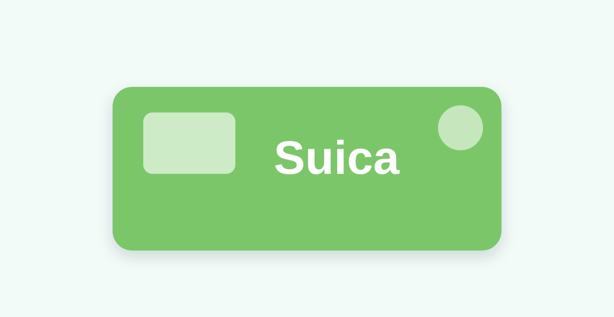

Top Tours & Activities
Curated experiences and tours to make your trip unforgettable.
Browse Activities ›Pre-departure checklist
Simple steps to get ready for a smooth and stress-free journey.
⌁
1. Get Online
Prepare eSIM or SIM before you go.
🚙
2. Airport Transfer
Book your ride in advance.
🚆
3. Plan Your Route
Check Shinkansen and local routes.
JR
4. JR Pass Check
See if it is right for you.
🤝 Handpicked Partners
We work with trusted providers.
🔒 Transparent & Secure
Clear pricing and no hidden fees.
🎧 Support in Japan
Local support when needed.
🧭 Practical
Only services useful for travelers.